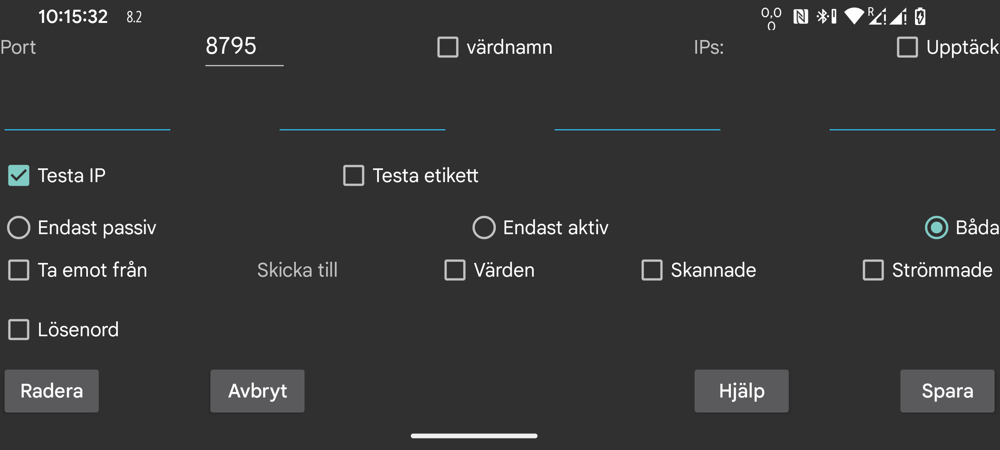

Ange en anslutning till en annan instans av Juggluco.
Juggluco på en enhet skickar data via IP/TCP till Juggluco på en annan enhet. För att upprätta en anslutning måste en instans lyssna på en port, medan den andra instansen måste kontakta den porten.
En anslutning kan vara "Endast aktiv", "Endast passiv" eller "Båda". En passiv instans av Juggluco lyssnar på den port som anges på föregående skärm (vänster mittmeny → Spegling). En aktiv instans kontaktar den passiva instansen på den port som anges på denna skärm. Om den ena instansen är "Endast aktiv" bör den andra instansen vara "Endast passiv". Om "Båda" valts, bör båda instanserna ha "Båda" valt.
Om denna instans av Juggluco aktivt tar kontakt måste du ange vilken eller vilka IP-adresser den ska kontakta. Om den andra instansen har flera IP-adresser (till exempel när två enheter ibland är anslutna via ett hemnätverk och ibland direkt som portabel hotspot) kan du ange mer än en.
VARNING: Ange aldrig IP-adressen för flera enheter, i så fall kommer de bara att ta emot en del av datan.
värdnamn: Ange ett värdnamn istället för en IP-adress. Detta gör att anslutningen blir beroende av en namnserver, vilket kan göra den långsammare och känslig för avbrott i namnservern. Det här alternativet bör endast användas om du inte kan ställa in en statisk IP-adress och värdnamnet automatiskt kopplas till den dynamiska IP-adressen.
Detektera: I alla alternativ utom "Endast aktiv" kan du välja "Detektera". I så fall sparar Juggluco den första IP-adressen som kontaktar den som den andra sidans IP-adress. För att kontrollera om rätt enhet tar kontakt finns det två sätt: Du kan välja "Testa IP" för att testa IP-adressen. Om du väljer "Testa etikett" upprättas en anslutning endast om båda sidor har angett samma etikett.
Välj Ta emot från om du vill att den här enheten ska fungera som speglings-app.
Om du vill att den här enheten ska vara avsändaren av data måste du ange vilken data som ska skickas.
Värden: dos, mat och sportdata som du har angett.
Skanningar: data som tas emot genom att skanna sensorn (skanningar och historik under Libre2, under Libre3 endast data som behövs för att komma åt sensorn via Bluetooth).
Strömmande: data som tas emot av Bluetooth. Under Libre3 inkluderar detta historikdata.
Ibland finns vissa data redan på den mottagande enheten. Du kan ange tills när dessa data finns:
Start: inga data finns
Nu: all data finns
Eller ett specifikt datum som bestäms av skärmens startposition.
När en datakälla läggs till i en befintlig anslutning, gäller startdatumet endast den tillagda datakällan. Till exempel om skanningar och strömmande redan har skickats till värden, och värden nu har lagts till, bestämmer startdatumet bara vilka värden som ska skickas.
Lösenord: Om två enheter är anslutna via en osäker anslutning kan data signeras och krypteras genom att ange samma lösenord (maximalt 16 tecken) på båda sidor av anslutningen.
Spara: Välj Spara för att spara det du har angett.
Radera: tar bort denna anslutning.
I det enklaste användningsfallet är alla anslutningar kopplade till ditt hemnätverk, vilket gör att du kan använda lokala IP-adresser. Du kan också ansluta över internet via Wi-Fi. I så fall bör du kolla din modemmanual för att se hur du vidarebefordrar en extern port till en IP-adress och port på ditt hemnätverk.
Två smartphones som är anslutna via mobildata kan kommunicera direkt med varandra, förutsatt att en av dem kan lyssna på en nätverksport. Om ingen av dem har en individuell IP-adress kan de fortfarande kommunicera genom en tredje enhet. En möjlighet är att köra Juggluco på en Android-enhet (minst Android 4.4) som är ansluten till internet via ett modem. En annan möjlighet är att använda ett kommandoradsprogram som tillhör Juggluco på en dator, som din PC eller en server på Amazon AWS.
Handledning för vidarebefordran av portar:
Det går att ta emot glukosvärden via Bluetooth på en enhet utan NFC (se https://www.juggluco.nl/Juggluco/mirror). Först måste du initiera sensorn via NFC på en enhet som har NFC, och sedan kan du skicka "Skanningar" och "Strömmande" till enheten utan NFC. Efter det vänder du på anslutningen för strömmande data: stäng av Bluetooth-anslutningen på NFC-enheten och slå på den på enheten utan NFC. Glöm inte att stänga av "sensor via Bluetooth" på båda enheterna.
Det betyder att du kan skanna med en enhet och få glukosvärden via Bluetooth på en annan. Men på alla enheter bör all sensordata vara tillgänglig. När enheter utbyter data ska de alltid ta emot både skanningsdata och strömmande data. Du bör alltid skicka tillbaka strömmande data till NFC-enheten och skanningsdata till enheten utan NFC. Annars kan data bli osynkroniserade, vilket kan leda till att gamla autentiseringsdata används eller att nya data skrivs över med gamla.
Manuellt angivna värden är helt oberoende.
En strikt matchning av specifikationer på båda sidor av uppkopplingen är nödvändig. En enkel miss kan göra att dataöverföringen inte fungerar.
Det är möjligt att uppkopplingen hänger sig och behöver startas om genom att slå på eller av WIFI, eller trycka på Synkronisera. Att ändra en anslutning som bara är aktiv eller passiv till båda, eller tvärtom, kan också påverka.
Du bör även tänka på att IP-adresser kan ändras beroende på vilken uppkoppling du använder. Till exempel måste olika IP-adresser användas på ditt hemnätverk jämfört med när du använder en portabel hotspot.